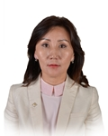

Member of the State Great Khural of Mongolia
Oyunchimeg Munkhuu
Member of the State Great Khural of Mongolia OYUNCHIMEG Munkhuu
Mongolian People's Party
Education, graduated schools, education degree:
1988 Secondary School #1 of Murun, Huvsgul
1995 MA in Journalism, Faculty of journalism, Leningrad State University, Russian Federation
2008 MA in Journalism, Oklahoma State University, USA
Working experience:
1995 - 2009 Editor, editor in chief, commentator at MM Agency, National Television of Mongolia
1998 - 2001 General editor-Director of MM Agency
2009 - 2012 Head, Press information department, Cabinet office, Spokesperson for Prime Minister of Mongolia
2013 - 2015 Advisor, MPP caucus at the State Great Hural
2013 Secretary at MPP
2015 Director, Mongolian News Agency
2016 Institute of Strategic Development Mongolia, Member of Board
2016 Member of the State Great Hural (Parliament) of Mongolia
Awards:
2007 Order of “Polar Star”
Foreign language knowledge:
English; Russian